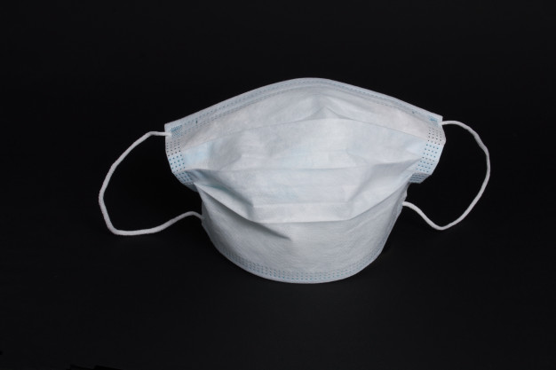
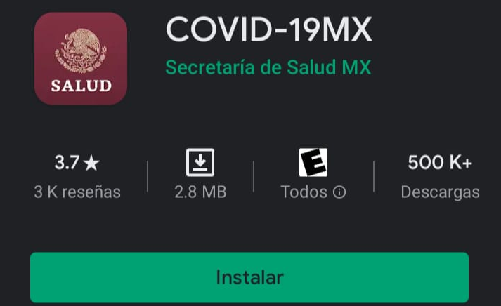

To date, Mexico has been greatly affected by the presence of the SARS-CoV-2 Virus. While this pandemic has only exposed preexistent issues in the country's functioning, we must implement measures to overcome it, and emphasizing the population's mental health is among those measures. How has the current pandemic impacted mental health among mexican victims of COVID-19?
Analysis of the country's current situation regarding COVID-19.-
Map 1: Mexican Regions classified by daily confirmed cases.

Total number of cases so far: 460, 111
coronavirus.gob.mx
Number of recovered cases: 288,076 from 21 States,
excluding: Aguascalientes, Baja California, Baja
California Sur, Campeche, Coahuila de Zaragoza, Colima,
Chiapas, Chihuahua, Federal District and Zacatecas
SINAVE (2020)
Total number of cases so far: 460, 111
coronavirus.gob.mx
Number of recovered cases: 288,076 from 21 States,
excluding: Aguascalientes, Baja California, Baja
California Sur, Campeche, Coahuila de Zaragoza, Colima,
Chiapas, Chihuahua, Federal District and Zacatecas
SINAVE (2020)
In order to unify the regions of the country by infections and recovered cases, we used two techniques: principal component analysis (PCA) and the use of Machine Learning to see which group or cluster each state belonged to. For this, we used the elbow curve method, which consists of the sum of squared errors in each group for all the data we need, measuring the distance by using an Euclidean metric, and looking for the point in which a curve or an "elbow" is drawn. That point determines how many clusters we should use.
Principal Component Analysis.
 Epidemic Curve
Epidemic Curve
The criteria for recovering from Coronavirus from the three states of the State of Mexico, CDMX
and Guanajuato will be taken, making a comparison with the time in which the discharge was
made.
What is an epidemic curve?
According to Dr. Michele Torok, an epidemic curve is a graphic representation of the number of
cases according to the date of the onset of the disease. Torok (s.f.).
What is the difference between an outbreak and an epidemic?
Regarding the cases of a disease, they are very similar, since an outbreak is a disease that appears
where it is not common for it to appear, while an epidemic is a disease that attacks a certain
number of people in a certain time.
Epidemic curves for daily cases at the national level, State of Mexico, CDMX and Guanajuato:
Mexico as a developing country has been one of the most affected by the pandemic, the
population has been exposed to unprecedented stress, economic difficulties increased to those
already suffered before the pandemic, fear of an unknown virus and uncertainty of the health
system, all this has contributed to the gradual increase in the individual risk portfolio to present
psychological alterations; Although mental health is not among the first bases for society, it is of
the utmost importance to carry out preventive measures for them.
A clear example is anxiety, which is a conduct disorder characterized by increased muscle tension
and autonomous hyperactivity, negatively affecting the psychosocial functioning of the individual
almost daily; the exact cause is uncertain but is associated with the stress of emotional loss and
dangerous situations.
It occurs rarely before adolescence; the prevalence in the adolescent population is 0.9%, among
adults 2.9%, that is, 3 times higher than in adolescents (in the United States), now it is twice more
common in women than in men, white populations have more likely to be affected than those of
African, Asian or Hispanic ethnicity, although it must be taken into account that all these factors
were increased by the quarantine. (Gennaro, 2020)
Specific attack ratio: number of cases with mental illness divided by the total number of the
population suffering from covid and this result multiplied by 100.
Example: Estado de México.-
Attack ratio = [exposed population (3,850)] / total recovered cases (9,167)] x 100 = 42%. Thus, the
anxiety attack ratio for people recovered with coronavirus in the State of Mexico is 42%. (Gennaro,
2020)
Epidemics and diseases bring weaknesses in people's economic, health and lifestyle systems to
light, revealing human frailty.
Spread throughout the world, the Coronavirus pandemic further increases the number of infected
cases and deceased people, also affecting our country. Its consequences have extrapolated the
health field, causing transformations in interpersonal relationships, daily life. politically and
psychologically.
“A major consequence of the Covid-19 pandemic is that it is likely to have increased social isolation
and loneliness (as reflected in our surveys), which are strongly associated with anxiety, depression,
self-harm, and suicide attempts throughout life's course. We can assume that for the general
population it has been a rather complex experience due to the fact that confinement tends to be
difficult since there are negative elements such as fear and anxiety.
Speaking of other types of repercussions, sectors within the Mexican economy begin to see
deterioration from the first months of the pandemic, the data shows that the fall in employment,
in tax collection and in company profits will lead to the beginning of a rapid and deep economic
crisis; Adding to this the forecast of job losses for this year in Mexico, according to business
associations and the international recruitment organization Manpower Group, 1.2 to 2 million jobs
have been lost. Also, it is worth mentioning that it was announced that the impact of the
coronavirus pandemic will cause the worst crisis that Latin America has suffered since 1914 and
1930, the Economic Commission for Latin America and the Caribbean (ECLAC) estimates that the
Mexican economy will be between the most affected, with a drop of 6.5% in GDP at the end of this
year.
Also, the coronavirus is instantly changing the way education is delivered, since the school and the
home have become the same place after the necessary regulations. According to UNESCO, more
than 861.7 million children and young people in 119 countries have been affected by having to
face the global pandemic that has hit us this year. Millions of families in the US have had to join
the 1.7 million children who are enrolled in homeschooling. As in Mexico, where the Ministry of
Public Education (SEP) has extended the vacation period from March 23 to April 17, 2020.
At this stage of the pandemic, no one doubts the direct and indirect psychological and social
effects of the disease in the majority of the population and that is why preventive measures
should be taken against it, in this article we have seen an approximation of how it can affect a
single mental appearance, but there are endless mental illnesses that affect the population on a
daily basis. It is necessary to keep in mind the attitudes and activities that we can take to prevent
them, among them is listening to music and new genres, discovering virtual galleries and museums
in Google Culture and Arts until learning completely new skills such as a new language or playing
an instrument Following established routines and trying to do new things or things that can keep
our mind occupied are also helpful. It should be noted that the hardest step when dealing with
mental health problems is asking for help and admitting that you have a problem. No matter how
much we try to give our mind the best care, there is a probability of falling into anxiety due to the
various repercussions that the pandemic can have; That's why we highly recommend the following
options for asking for help in the event of a mental health emergency:

International Bipolar Foundation
(Mexican Suicide Hotline)
Phone Number: 525-510-2550
Alumbra: Online Chat with
expert Psychologists
Website: alumbramx.org/ayuda/
Emotional Crisis Intervention Services
(In the State of Jalisco and all of the mexican republic)
Phone Number: 01800 227-4747
SAPTEL (Mental Health Medical Service)
Phone Number: 01800 472-7835
International Bipolar Foundation (Mexican Suicide Hotline)
Phone Number: 525-510-2550
Alumbra: Online Chat with expert Psychologists
Website: alumbramx.org/ayuda/
Emotional Crisis Intervention Services (In the State of Jalisco and all of the mexican republic)
Phone Number: 01800 227-4747
SAPTEL (Mental Health Medical Service)
Phone Number: 01800 472-7835
We also recommend the following medical services in case you have or know of a suspected case of COVID-19 or any other medical emergency:


Emergency services official contact number and app
Locatel-COVID-19 Cases Tracing
Phone Number: 55 5484-0400
Mexican Red Cross
Phone Number: 55 1084 9000

COVID-19 App from
Mexico’s Health Secretary
Emergency services official contact number and app
Locatel-COVID-19 Cases Tracing
Phone Number: 55 5484-0400
Mexican Red Cross
Phone Number: 55 1084 9000
COVID-19 App from
Mexico’s Health Secretary